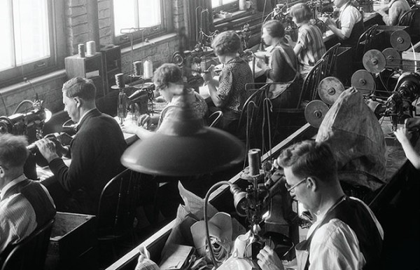
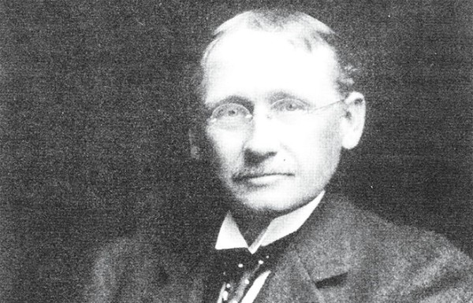

The Secret History of Life Hack
We live in the age of life-hacking. The concept, which denotes a kind of upbeat, engineer-like approach to maximizing one’s personal productivity, first entered the mainstream lexicon in the mid-2000s, via tech journalists, the blogosphere, and trendspotting articles with headlines like “Meet the Life Hackers.” Since then the term has become ubiquitous in popular culture — just part of the atmosphere, humming with buzzwords, of the Internet age. Variations on a blog post called “50 Life Hacks to Simplify Your World” have become endlessly, recursively viral, turning up on Facebook feeds again and again like ghost ships. Lifehacker.com, one of the many horses in Gawker Media’s stable of workplace procrastination sites, furnishes office workers with an endless array of ideas on how to live fitter, happier, and more productively: Track your sleep habits with motion-sensing apps and calculate your perfect personal bed-time; learn how to “supercharge your Gmail filters”; oh, and read novels, because it turns out that “reduces anxiety.” The tribune of life hackers, the author and sometime tech investor Timothy Ferriss, drums up recipes for a life of ease with an indefatigable frenzy, and enumerates the advantages in bestselling books and a reality TV show; outsource your bill payments to a man in India, he advises, and you can enjoy 15 more minutes of “orgasmic meditation.” Life-hacking wouldn’t be popular if it didn’t tap into something deeply corroded about the way work has, without much resistance, managed to invade every corner of our lives. The idea started out as a somewhat earnest response to the problem of fragmented attention and overwork — an attempt to reclaim some leisure time and autonomy from the demands of boundaryless labor. But it has since become just another hectoring paradigm of self-improvement. The proliferation of apps and gurus promising to help manage even the most basic tasks of simple existence — the “quantified self” movement does life hacking one better, turning the simple act of breathing or sleeping into something to be measured and refined — suggests that merely getting through the day has become, for many white-collar professionals, a set of problems to solve and systems to optimize. Being alive is easier, it turns out, if you treat it like a job. In fact, one thing that’s striking about this culture of self-measurement and self-optimization is how reminiscent it is of a much earlier American workplace fad — one that was singularly unpopular with the workers themselves. Life-hacking wouldn’t be popular if it didn’t tap into something deeply corroded about the way work has, without much resistance, managed to invade every corner of our lives. IF THE RISE OF life-hacking signaled a desire to reign in the chaos of the multitasker’s personal life, this other craze was born out of a desire to command the chaos of the early, large-scale industrial workplace. In the wildly disorganized world of early-20th-century American capitalism, there was a rage among business elites for ideas about how to systematize their firms. It was the dawn of efficiency experts, management consultants, and enthusiastic faith in the idea of measurement-driven success, long before terms like “metrics” became part of everyday discourse. Certainly the most influential figure from this period — the one we remember now — was Frederick Winslow Taylor, an engineer who set out to rationalize what he saw as the lackadaisical, ad hoc planning of factory production. He tried to standardize workmen’s tools (in today’s parlance, we might say he hacked the coal shovel); he introduced piece-rate pay systems to induce competition among workers; and, most famously, he brought men with stop watches to measure the efficiency of people’s work habits. The aim was to make production smoother and more predictable, and to elevate a new class of scientific managers above every operation. The workers on the shop floor would be subordinated to the whims of the systematizers. “In the past, man has been first,” he wrote in his 1911 treatise The Principles of Scientific Management. “In the future, the system must be first.” But Taylor was as much an exemplar of the obsessions of his age as he was a pioneer. Even in 1900, well before Taylor had solidified his methods, a group of efficiency-obsessed managers had already seized the zeitgeist and started a magazine called (inevitably, perhaps) System, subtitled “A Monthly Magazine for the MAN of AFFAIRS.” Each issue of System — whose popularity ballooned in the Roaring Twenties — contained a special section of photographs, entitled “The Battlefields of Business,” where various methods and forms of office layout were held up as examples to emulate, and articles proposing new models for the minutiae of work, be it a novel system of filing or a more efficient mode of envelope stuffing. The vaunted efficiency experts of this era monitored workers’ movements with cameras and the aforementioned watches, employing a technique called “time and motion study.” And what they found was often appalling to them. One of System’s occasional writers was a man named W.H. Leffingwell, a disciple of Taylor who conducted far-reaching experiments in office organization. In his articles for the magazine and later in his book Scientific Office Management, he detailed the horrors of the inefficient, underobserved office, a wasteland of expensive, unnecessary motions: Watch a girl jogging paper or cards. Long after the work is done she goes on calmly patting them here and there. Watch a clerk rushing through his work, throwing the papers in a disorderly heap as he goes and then when he has finished, watch him spend a few minutes straightening things up. It never occurs to him to pile them in an orderly manner in the beginning. Leffingwell supplemented his book with photographs and captions — not entirely unlike the series of captioned images that make up “50 Life Hacks to Simplify Your World” (“Use paper clips to organize your cables”; “Put pancake mix in a ketchup bottle for a no-mess experience”). One of his images, for instance, indicated how the scientifically managed office earned savings of 20 percent in opening envelopes through the elimination of useless motions and the deployment of customized furniture. “This ‘motion-studied’ mail opening table made possible a 20% increase in the output,” Leffingwell writes in one caption, “This girl takes out money and letters and pins and sorts them at the rate of 310 an hour. Note the sunken baskets and the footrest.” When it was difficult to implement scientific management in the workplace — that is, when workers didn’t take kindly to being timed — Leffingwell suggested manipulative contests, not so different from online programs like Chore Wars and similar examples of self-administered “gamification,” to encourage employees to participate. “One manager who has had considerable success in introducing the use of the stop watch in his office, casually remarks to his subject: ‘I wonder how long it takes you to do that job?’ After two or three employees have been timed and nothing has happened, the rest of the office force is usually not only willing but anxious to be ‘time studied.’”
Frederick Winslow Taylor set out to rationalize the workplace and standardize workmen’s tools. In today’s parlance, we would say he hacked the coal shovel. This enthusiasm for efficiency didn’t stop in the office or the factory. In the spirit of the age, Taylor’s associates and acolytes soon began systematizing everything they saw. Medicine, bricklaying, sports — you name it, the Taylorists tried to make it more rational. A husband and wife team, Frank and Lillian Gilbreth, became famous for Taylorizing their own large family of 12 children. “Dad took moving pictures of us children washing dishes, so that he could figure out how we could reduce our motions and thus hurry through the task,” Ernestine Gilbreth Carey wrote of her father in a book that became a bestseller, and later a popular film, called Cheaper by the Dozen. Ultimately, scientific management wasn’t just about efficiency. It also strongly reflected an ideology and an aesthetic. At one point in Scientific Office Management, Leffingwell’s prose begins to overheat as he calculates that, in an office where a water fountain sits 50 feet away from 100 clerks, those workers would end up walking 50,000 feet a day (“nearly ten miles!”) just to drink their daily complement of liquid. In contrast to such irksome, thoughtless irrationality, Leffingwell and his ilk envisioned the office as the site of a potential utopia, where buzzing managers proliferated like cicadas in summer, where impeccably ordered rows of desks stretched to the horizon, where American business became inexorable, honed, and proud. What this meant, in practice, was that workers were forced to become aware of their bodies and their motions to a degree beyond anything that they had known before. Taylorism meant constant supervision. Pictures of offices show foreman-like workers pacing the floors over sitting clerks with their heads bowed — no one making light conversation, no one daring to turn their eyes from their work. In many offices, the wrong motion would earn demerits. Thanks to the spread of Taylorism, managers believed almost dogmatically that slight shifts in office arrangements could change behavior as well as allegiances and work habits. And some of those shifts did, in fact, have powerful reverberations. The management theorist R.H. Goodell described one case in which clerical workers were constantly disrupted by visitors passing in a corridor. He decided to turn their desks away from the door, and also from their supervisor’s desk. This meant that they were no longer disrupted by the passersby, nor distracted by their supervisor’s gaze — though they knew she was constantly watching. In other words, it was easier for workers to continue working if they internalized the watchful eye of their boss. There’s no manager stop-watching you, or forcing you to work in particular ways; you’re ostensibly choosing, of your own will, to make your life better. THE ARC OF SCIENTIFIC management is long, but it bends toward self-Taylorizing. In 1929, System changed its name — to BusinessWeek. Late last year, Bloomberg Businessweek, the magazine’s latest incarnation, published a long feature on the Vitamix, a $450 blender that has become hugely popular among white-collar types, especially males. “It’s the perfect life hack,” wrote the article’s author, Joshua Green. “The seductive ease of liquefied foods eventually makes ordinary methods of food preparation seem as burdensome and archaic as churning your own butter.” There is at least one telling contrast between the efficiency expert’s dominion over the early-20th-century office and the life hacker’s attempt at dominion over himself. Scientific management is perhaps the most consistently reviled movement in the history of office work. It has become a ritual for writers to decry the baleful influence of Taylorism over organizational life. The office designer Francis Duffy has even made a point of emphasizing that Taylor was well-liked by Hitler and Stalin. (While Taylorism was indeed adopted in the Third Reich and the Soviet Union, it was also favored in democratic France and Japan.) And yet by comparison, the modern day self-Taylorization of the life hacker has broad appeal. In a way this makes sense: There’s no manager stop-watching you, or forcing you to work in particular ways; you’re ostensibly choosing, of your own will, to make your life better. The way true believers like Ferriss so thoroughly master-plan their lives has a gonzo attractiveness to it. What’s more, “hacking” sounds much better than “management.” But some of the critiques of scientific management are instructive. One of the great flaws in the ideology of Taylorism was its claim to be able to reduce the number of laborers by making them more efficient. Although it might have done this, it also created massive overhead costs for Taylorist operations. Offices had to grow enormous simply to house all the new “white shirts,” with their stop watches and cameras. There was a profound expansion of office hierarchy, a multiplication of levels and departments. For all the costs the system saved on the factory floor, it likely reincurred them through all the new hired hands in the office. In a more spectral fashion, something similar is happening with life-hacking. Rather than putting people in greater control of their lives, it puts them into the service of a stratum of faceless managers, in the form of apps, self-administered charts tracking the minutiae of eating habits and sleep cycles, and the books and buzzwords of gurus. They hum distractingly in the background, like a growing cloud of blackflies. Life-hacking does create a small number of what the anthropologist David Graeber calls “bullshit jobs” — occupations in areas like public relations and administration that pay well but add little value to the world. The life-hacking industry has created pseudo-intellectuals who sell useless advice about how to arrange your pantry or devise a better storage system for winter clothes (plus, someone has to program those self-monitoring apps). But mostly life-hacking threatens to turn every aspect of life into a task to be managed. It enlarges the amount of work to be done, in a way that — typical, maybe, of today’s economy — creates virtually no jobs, except pointless ones. Rather than being stymied, Taylor’s dream of pure efficiency has come to be vindicated. Today, liberated from threats or coercion, we scientifically manage ourselves. This post, which is adapted from Nikil Saval’sCubed: A Secret History of the Workplace, originally appeared in the May/June 2014 issue ofPacific Standardas “The Secret History of Life-Hacking.” For more, subscribe to our print magazine.